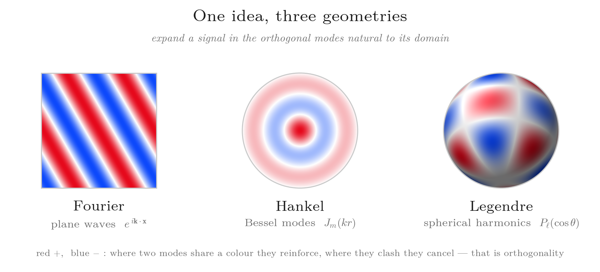
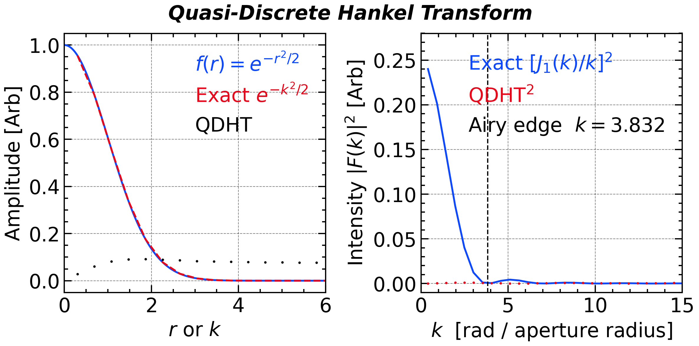
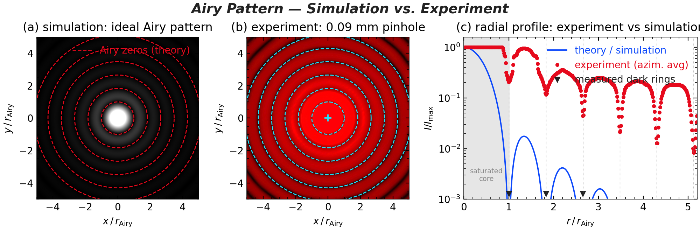
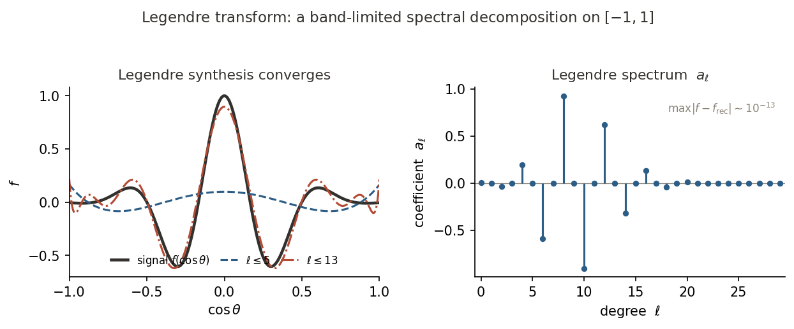
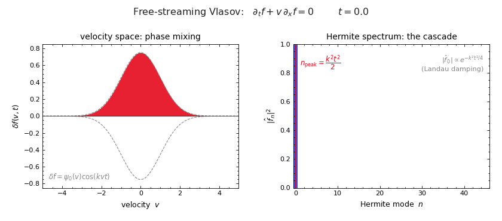
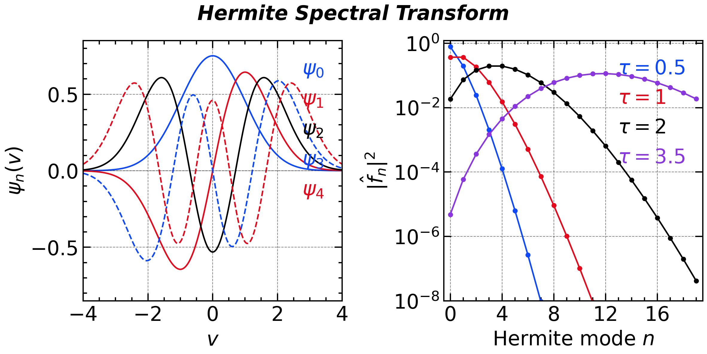
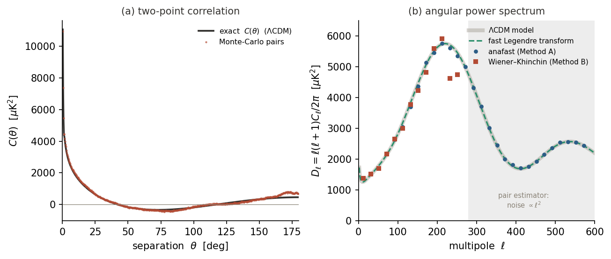
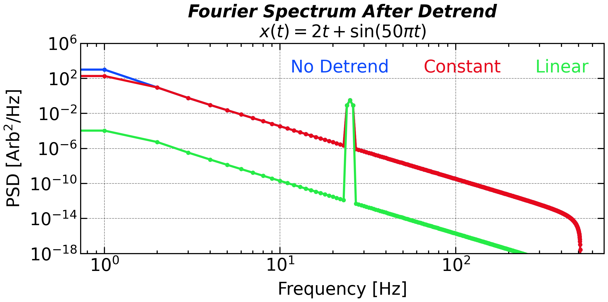
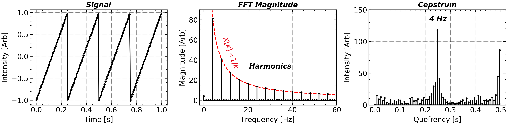
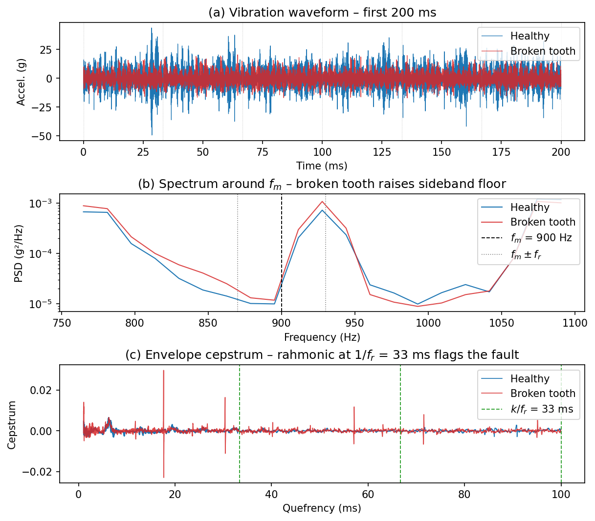

Power Spectral Density
Parseval’s Theorem and Energy Conservation
Parseval’s Identity: The identity asserts that the sum of squares of the Fourier coefficients of a function is equal to the integral of the square of the function. The CFT version of Parseval’s Identity can be expressed as: \int_{-\infty}^\infty x^2(t)\, dt = \int_{-\infty}^\infty X^2(f)\, df and the DFT Version: \sum_{n=0}^{N-1} |x[n]|^{2} \delta t \;=\; \sum_{k=0}^{N-1} |X[k]|^{2} \delta f This theorem essentially states that the total energy of a signal in the time domain is equal to the total energy in the frequency domain.
In the physical world, the square power of the amplitude often refers to some kind of energy or power. For example, the square of the displacement (x) of a spring, x^2 is proportional to the elastic potential energy (kx^2/2, where k describes the stiffness). The electromagnetic field in the vacuum contains the energy density (u) written as u=u_E + u_B=\frac{1}{2}(\varepsilon_0 \mathit{E}^2 + \frac{1}{\mu_0}\mathit{B}^2) In these cases, the energy of the signal naturally linked with the energy of the electromagnetic field. Nevertheless, the energy of a signal is an extensive property as it linearly increases with the length of the sample. In the ordinary investigation, the signal energy is always further converted as signal power, which is an intensive property that describe the amplitude and is independent of signal length. The definition of power, P, can be written as: P= \frac{1}{T}\int_{-T/2}^{T/2}|x(t)|^2 \mathrm{d}t ## Power Spectral Density
The Parseval’s Identity also reveals that it is possible to measure the energy contribution from each individual frequency by Fourier transform. The quantity, Power Spectral Density (PSD), describes how the power of a signal is distributed with frequency.
According to Parseval’s theorem, the total power of a signal can be computed in either the time domain or the frequency domain. The total power can be expressed as: \begin{align*} P&=\frac{1}{N\delta t}\sum_{n=0}^{N-1}|x[n]|^2 \delta t \\ &=\frac{1}{N^2\delta f}\sum_{k=0}^{N-1}|X[k]|^2 \delta f \\ &=\sum_{k=0}^{N-1} \boxed{\frac{1}{Nf_s} |X[k]|^2}\, \delta f\\ &=\sum_{k=0}^{N-1}\boxed{PSD[k]}\delta f \end{align*} for DFT. Considering that DFT yields both positive and negative frequency, we typically fold the DFT result. Naturally, the definition of PSD is given as: $$ PSD[k]= { \begin{align*} \frac{1}{Nf_s} |X[k]|^2, \ & k = 0\ \mathrm{or}\ k = N / 2\}\\ \frac{2}{Nf_s} |X[k]|^2, \ & k \notin \{0, N / 2\}\\ \end{align*} . $$ PSD[0] represents the DC component and is ignored in the spectral analysis for the most (but not all) time.
According to the linearity of \mathcal{F}, X[k], after single-side compensation, should also be proportional to the sine wave amplitude (A_k). Easily catch that the coefficient and power spectral density at the exact wave frequency has the form of \begin{align*} PSD[k]& = \frac{P[k]}{\delta f} = \frac{A_k^2/2}{f_s/N} = \frac{2}{Nf_s} |X[k]|^2 \\ \Rightarrow|X[k]|& = \frac{1}{2}\cdot A_k \cdot N \end{align*} 1/2 in this equation arises from the fact that ({\int_0^{2\pi}\mathrm{sin^2}x \mathrm{d}x})/{2\pi}=1/2.
numpy.fftimplementation of PSD calculation:window = np.hanning(N + 1)[:-1] # Periodic Hanning Window x_w = x * window # Normalization factor (sum of squares of window coefficients) norm_window = np.sum(window**2) # Compute one-sided FFT coef = np.fft.rfft(x_w) freq = np.fft.rfftfreq(N, d=dt) # Estimate PSD with proper scaling: psd = (np.abs(coef)**2) / (N * fs * norm_window) # Single-side compensation: double non-DC (and non-Nyquist if N is even) if N % 2 == 0: psd[1:-1] *= 2 else: psd[1:] *= 2scipy.signal.welchis a more robust and efficient implementation of PSD estimation through Welch’s method. This method will be introduced later in Chapter 5. But it still provide a concise way to estimate PSD in one line of code, whose results can be exactly the same as above if the parameters are set properly.freq, psd = scipy.signal.welch(x, fs=fs, window='hann', nperseg=N, noverlap=0, detrend=False)- The
hannwindow used inscipy.signal.welchis periodic instead of symmetric.
- The
Correlation Function [scipy.signal.correlate]
The correlation function has a similar form as the energy of the signal: \begin{align*} {R_{xy}}(t, t + \tau) := \mathbb{E}\left[ {x(t)} {y^*(t + \tau)} \right] \end{align*} where the asterisk symbol represents the complex conjugate operation when X and Y are complex signal. Specifically, the correlation function between X and itself is called autocorrelation function (ACF): \begin{align*} {R_{xx}}(t, t + \tau) := \mathbb{E}\left[ {x(t)} {x^*(t + \tau)} \right] \end{align*} The correlation function not only measures the similarity between two signals, but also reveals the time lag (\tau) between them. The autocorrelation function measures how similar a signal is to itself at different time lags, providing insights into the signal’s periodicity and temporal structure.
Especially, under certain conditions, the autocorrelation function shows intrinsic relationship with the power spectral density, which will be introduced in the next section.
Wide-Sense Stationarity
If you want the calculated power spectrum to be representative for the entire signal, meaning PSD(f,t)=PSD(f), then the signal needs to satisfy the Wide-Sense Stationarity (WSS)condition. The core idea behind this is that only when a signal’s intrinsic statistical properties are constant over time can we use a single, static spectrum to describe it meaningfully. WSS is the mathematical framework that provides this guarantee of statistical stability.
Specifically, a signal x(t) is considered WSS if it has:
Constant Mean:
The mean of the signal is constant for all time: \mathbb{E}[x(t)] = \mu, \quad \forall t
Time-Invariant Autocorrelation:
The autocorrelation function depends only on the time difference (lag) between two time instants, not on the absolute time: R_x(t_1, t_2) = R_x(\tau), \quad \tau = t_2 - t_1
These conditions imply that even if the signal itself is random, its first two moments are invariant to shifts in time. Under these conditions, the autocorrelation reduces to a single-variable function R_x(\tau), and the Wiener–Khinchin theorem that we are going to introduce, will ensures a well-defined PSD.
Wiener–Khinchin Theorem
For a WSS signal x(t), the power spectral density can be derived as the Fourier transform of the autocorrelation function: S_x(f) = \int_{-\infty}^{\infty} R_x(\tau)\,e^{-j 2\pi f \tau}\,d\tau This is known as the Wiener–Khinchin theorem, and it is valid only under the assumption of WSS. The PSD(f) then describes how the total power of the signal is distributed across different frequency components.
This theorem tells the intrinsic relationship between the PSD and ACF. This relationship is particularly useful because it allows us to compute the power spectral density from time-domain data by first calculating the autocorrelation function and then applying the Fourier transform. This approach is often more robust, especially for signals that may be noisy or have missing data.
A Family of Spectral Transforms
The Fourier transform is one member of a family. Every transform in this chapter does the same thing — it projects a signal onto a complete set of orthogonal basis functions — but each set is the one natural to a particular geometry (precisely: the eigenfunctions of the Laplacian on that domain). Choosing the transform whose symmetry matches the data is what makes a spectrum sparse and physically meaningful.
| Transform | Kernel | Natural domain | Appears in |
|---|---|---|---|
| Fourier | e^{ikx} | the line — translation symmetry | PSD, Wiener–Khinchin |
| Hankel | J_m(kr) | the disk — rotational symmetry | circular apertures, Airy pattern |
| Legendre | P_\ell(\cos\theta) | the sphere — polar angle | CMB angular power spectrum |
In the schematic below each basis function is drawn as a sign pattern — red where it is positive, blue where it is negative — on its natural domain: plane-wave stripes, Bessel rings, and spherical-harmonic patches. This makes orthogonality visual. A transform coefficient is the integral of the signal times one basis pattern; where their colours match the product is positive everywhere and the contributions add up, while any mismatched pair has red and blue overlapping in equal measure and cancels to zero. That is precisely why each transform isolates one mode and ignores all the others.
A fourth member — the Hermite transform H_n(v)\,e^{-v^2/2} — is the natural basis not of a spatial domain but of velocity space. Because its job is dynamical (it tracks how a distribution function stirs in velocity over time), we meet it later, as an animation rather than a static sign pattern.

from matplotlib.colors import LinearSegmentedColormap
from scipy.special import jn, jn_zeros, sph_harm
# a schematic, so use the elegant LaTeX look: Latin Modern text + Computer Modern math
plt.rcParams.update({'font.family': 'serif',
'font.serif': ['Latin Modern Roman', 'CMU Serif', 'DejaVu Serif'],
'mathtext.fontset': 'cm'})
# diverging map from the bright cycle: blue (0d49fb) <-> white <-> red (e6091c)
cmap = LinearSegmentedColormap.from_list(
'bwr2', ['#0d49fb', '#8aa9fc', '#ffffff', '#f28a91', '#e6091c'])
INK, FRAME, GREY = '#1b1b1b', '#c9c9c9', '#6f6f6f'
def caption(ax, name, basis):
ax.text(0.5, -0.085, name, transform=ax.transAxes, ha='center', va='top',
fontsize=15, color=INK)
ax.text(0.5, -0.225, basis, transform=ax.transAxes, ha='center', va='top',
fontsize=11.5, color=GREY)
# an orthographic, Lambert-shaded sphere coloured by a real spherical harmonic
def shaded_sphere(l, m, tilt=-58, azim=18, npix=620, light=(-0.45, 0.6, 0.78)):
g = np.linspace(-1, 1, npix); X, Y = np.meshgrid(g, g)
inside = X**2 + Y**2 <= 1.0
Z = np.sqrt(np.clip(1 - X**2 - Y**2, 0, 1))
t, az = np.deg2rad(tilt), np.deg2rad(azim)
cx, sx, cz, sz = np.cos(t), np.sin(t), np.cos(az), np.sin(az)
y1, z1 = cx*Y - sx*Z, sx*Y + cx*Z # Rx(tilt)
sX, sY, sZ = cz*X - sz*y1, sz*X + cz*y1, z1 # Rz(azim)
Yv = sph_harm(m, l, np.arctan2(sY, sX), np.arccos(np.clip(sZ, -1, 1))).real
Yn = Yv/np.nanmax(np.abs(np.where(inside, Yv, np.nan)))
rgb = cmap(0.5*(Yn + 1))[..., :3]
L = np.array(light)/np.linalg.norm(light)
diff = np.clip(X*L[0] + Y*L[1] + Z*L[2], 0, 1) # Lambert + soft specular
rgb = rgb*(0.42 + 0.58*diff)[..., None] + (diff**22*0.16)[..., None]
return np.dstack([np.clip(rgb, 0, 1), inside.astype(float)])
plt.close()
fig = plt.figure(figsize=(8.8, 4.0))
gs = fig.add_gridspec(1, 3, wspace=0.12, left=0.015, right=0.985, top=0.74, bottom=0.30)
ax = [fig.add_subplot(gs[0, i]) for i in range(3)]
g = np.linspace(-1, 1, 600); X, Y = np.meshgrid(g, g); R = np.hypot(X, Y)
imkw = dict(extent=[-1, 1, -1, 1], origin='lower', cmap=cmap, vmin=-1, vmax=1)
sq = lambda a: a.add_patch(plt.Rectangle((-1, -1), 2, 2, fill=False, ec=FRAME, lw=1.1))
ci = lambda a, lw=1.1: a.add_patch(plt.Circle((0, 0), 1, fill=False, ec=FRAME, lw=lw))
# (1) Fourier — plane wave on a square (the plane)
a = np.deg2rad(30)
ax[0].imshow(np.cos(7.5*(X*np.cos(a) + Y*np.sin(a))), **imkw)
sq(ax[0]); caption(ax[0], 'Fourier', r'plane waves $e^{\,i\mathbf{k}\cdot\mathbf{x}}$')
# (2) Hankel — concentric Bessel rings on the disk
Fh = jn(0, jn_zeros(0, 3)[-1]*R); Fh[R > 1] = np.nan
ax[1].imshow(Fh, **imkw); ci(ax[1]); caption(ax[1], 'Hankel', r'Bessel modes $J_m(kr)$')
# (3) Legendre / spherical harmonics — shaded sphere
ax[2].imshow(shaded_sphere(5, 3), extent=[-1, 1, -1, 1], origin='lower')
ci(ax[2]); caption(ax[2], 'Legendre', r'spherical harmonics $P_\ell(\cos\theta)$')
for a_ in ax:
a_.set_xlim(-1.04, 1.04); a_.set_ylim(-1.04, 1.04); a_.set_aspect('equal'); a_.axis('off')
fig.text(0.5, 0.965, 'One idea, three geometries', ha='center', va='top', fontsize=17, color=INK)
fig.text(0.5, 0.875, 'expand a signal in the orthogonal modes natural to its domain',
ha='center', va='top', fontsize=11.5, color=GREY, style='italic')
fig.text(0.5, 0.085,
r'red $+$, blue $-$ : where two modes share a colour they reinforce, where they clash they cancel — that is orthogonality',
ha='center', va='top', fontsize=9.5, color=GREY)
fig.savefig(save_path + 'figure_spectral_transforms_overview.png', dpi=200, facecolor='white')Hankel Transform
Radial Power Spectrum — a 2-D Wiener–Khinchin Theorem
For a statistically homogeneous and isotropic random field in 2-D — where the autocorrelation depends only on the separation distance r = |\mathbf{r}_1 - \mathbf{r}_2| — the Wiener–Khinchin theorem generalises to:
S(k) = 2\pi\int_0^\infty R(r)\,J_0(kr)\,r\,dr = 2\pi\,\mathcal{H}_0[R](k)
The 2-D power spectral density S(k) is the zeroth-order Hankel transform of the radial autocorrelation R(r), exactly as the 1-D PSD is the Fourier transform of R(\tau).
The Hankel transform (also called the Fourier–Bessel transform) is the natural spectral transform for signals with radial symmetry. It arises whenever the 2-D Fourier transform is applied to a function that depends only on the distance from the origin, r = \sqrt{x^2+y^2}, and has no azimuthal dependence.
Derivation from the 2-D Fourier Transform
For a radially symmetric function f(\mathbf{r}) = f(r), the 2-D Fourier transform is: F(\mathbf{k}) = \int_{\mathbb{R}^2} f(r)\,e^{-i\mathbf{k}\cdot\mathbf{r}}\,d^2\mathbf{r} Switching to polar coordinates \mathbf{r} = (r,\phi) and \mathbf{k} = (k,\psi): F(k) = \int_0^\infty f(r)\,r\left[\int_0^{2\pi}e^{-ikr\cos(\phi-\psi)}\,d\phi\right]dr = 2\pi\int_0^\infty f(r)\,J_0(kr)\,r\,dr where the Bessel identity \frac{1}{2\pi}\int_0^{2\pi}e^{iz\cos\theta}\,d\theta = J_0(z) was used. The result is independent of \psi, confirming that the 2-D spectrum of a radially symmetric function is itself radially symmetric.
Hankel Transform (order \nu): \mathcal{H}_\nu[f](k) = \int_0^\infty f(r)\,J_\nu(kr)\,r\,dr Inverse Hankel Transform: f(r) = \int_0^\infty \mathcal{H}_\nu[f](k)\,J_\nu(kr)\,k\,dk The transform is self-reciprocal: the forward and inverse kernels have exactly the same form. The 2-D Fourier transform of a radially symmetric function satisfies \mathcal{F}_{2D}[f(r)] = 2\pi\,\mathcal{H}_0[f](k).
The order \nu selects which Bessel function acts as the kernel. In practice:
| \nu | Application |
|---|---|
| 0 | 2-D optics, acoustic radiation, plasma profiles |
| 1 | Vortex beams, vector potential in cylindrical coordinates |
| n | Cylindrical waveguides, angular momentum eigenstates |
Key property — Hankel transform of a Gaussian. The function f(r) = e^{-ar^2} satisfies: \mathcal{H}_0\!\left[e^{-ar^2}\right](k) = \frac{1}{2a}\,e^{-k^2/(4a)} In particular, for a = \tfrac{1}{2}: \mathcal{H}_0\!\left[e^{-r^2/2}\right](k) = e^{-k^2/2} — the Gaussian is its own Hankel transform, which provides a convenient numerical benchmark.
Quasi-Discrete Hankel Transform (QDHT)
Unlike the Fourier transform, there is no general O(N\log N) Hankel transform. However, a near-exact discrete version exists for bandlimited functions (Guizar-Sicairos & Gutiérrez-Vega, J. Opt. Soc. Am. A, 2004).
The QDHT algorithm samples at the zeros of J_0:
- Let j_n denote the n-th positive zero of J_0 (j_1 \approx 2.405, j_2 \approx 5.520, …).
- For a function supported on r \le R and bandlimited to k \le k_{\max} = j_{N+1}/R, the sample grids are: r_n = \frac{j_n}{k_{\max}} = \frac{j_n R}{j_{N+1}}, \qquad k_m = \frac{j_m}{R}, \qquad m,n = 1,\ldots,N
- The discrete transform is the matrix–vector product: \boxed{F(k_m) = \frac{2}{k_{\max}^2}\sum_{n=1}^N \frac{J_0\!\left(j_m j_n / j_{N+1}\right)}{J_1^2(j_m)}\,f(r_n)}
The transform matrix T_{mn} \propto J_0(j_m j_n / j_{N+1}) is symmetric and approximately unitary: the inverse transform has the same structure with k_{\max}^2 replaced by R^2. Complexity: O(N^2), practical for N \lesssim 10^3.
import numpy as np
from scipy.special import jn_zeros, j0, j1
def qdht(f, R):
"""Zeroth-order quasi-discrete Hankel transform (Guizar-Sicairos 2004).
f : array, values of f(r) sampled at r_n = qdht_grid(R, N)
R : float, maximum radius
Returns
-------
k : wavenumber sample grid
F : transform values F(k_m)
r : radial sample grid (= qdht_grid(R, len(f)))
"""
N = len(f)
z = jn_zeros(0, N + 1) # j_{0,1}, …, j_{0,N+1}
jn, z_p = z[:N], z[N] # sample zeros / bandwidth product
k_max = z_p / R
r = jn / k_max # radial samples in (0, R)
k = jn / R # wavenumber samples in (0, k_max)
J0mat = j0(np.outer(jn, jn) / z_p)
F = (2.0 / k_max**2) * (J0mat / j1(jn)[:, None]**2) @ f
return k, F, r
def qdht_grid(R, N):
"""Return the N radial sample points for a QDHT on [0, R)."""
z = jn_zeros(0, N + 1)
return z[:N] * R / z[N]
from scipy.special import jn_zeros, j0, j1
leg_kw = dict(labelcolor='linecolor', handlelength=0, markerscale=0,
handletextpad=0, frameon=False)
def qdht(f, R):
N = len(f)
z = jn_zeros(0, N + 1)
jn_z, z_p = z[:N], z[N]
k_max = z_p / R
r = jn_z / k_max
k = jn_z / R
T = j0(np.outer(jn_z, jn_z) / z_p) / j1(jn_z)[:, None]**2
return k, (2.0 / k_max**2) * T @ f, r
# (a) Gaussian self-dual
N_a, R_a = 256, 8.0
z_a = jn_zeros(0, N_a + 1)
r_a = z_a[:N_a] * R_a / z_a[N_a]
f_gauss = np.exp(-r_a**2 / 2)
k_a, F_gauss, _ = qdht(f_gauss, R_a)
F_exact_gauss = np.exp(-k_a**2 / 2)
# (b) Unit circular aperture → Airy pattern
N_b, R_b = 512, 6.0
z_b = jn_zeros(0, N_b + 1)
r_b = z_b[:N_b] * R_b / z_b[N_b]
f_circ = (r_b <= 1.0).astype(float)
k_b, F_airy, _ = qdht(f_circ, R_b)
F_exact_airy = np.where(k_b > 1e-8, j1(k_b) / k_b, 0.5)
j11 = jn_zeros(1, 1)[0]
plt.close()
plt.figure(figsize=(8, 4))
ax1 = plt.subplot(1, 2, 1)
ax2 = plt.subplot(1, 2, 2)
ax1.plot(r_a, f_gauss, 'C0-', lw=1.5, label=r'$f(r)=e^{-r^2/2}$')
ax1.plot(k_a, F_exact_gauss, 'C1--', lw=1.5, label=r'Exact $e^{-k^2/2}$')
ax1.plot(k_a, F_gauss, 'k.', ms=2, label='QDHT')
ax1.set_xlim(0, 6)
ax1.set_xlabel(r'$r$ or $k$')
ax1.set_ylabel('Amplitude [Arb]')
ax1.legend(loc='upper right', ncol=1, **leg_kw)
ax2.plot(k_b, F_exact_airy**2, 'C0-', lw=1.5, label=r'Exact $[J_1(k)/k]^2$')
ax2.plot(k_b, F_airy**2, 'C1.', ms=2, label=r'QDHT$^2$')
ax2.axvline(j11, color='k', lw=1.0, ls='--', label=rf'Airy edge $k={j11:.3f}$')
ax2.set_xlim(0, 15)
ax2.set_ylim(-0.01, 0.28)
ax2.set_xlabel(r'$k$ [rad / aperture radius]')
ax2.set_ylabel(r'Intensity $|F(k)|^2$ [Arb]')
ax2.legend(loc='upper right', ncol=1, **leg_kw)
plt.suptitle('Quasi-Discrete Hankel Transform', **title_font)
plt.tight_layout()
plt.savefig(save_path + 'figure_hankel.png', bbox_inches='tight', dpi=300)Application: Airy Pattern of a Circular Aperture
When a monochromatic plane wave illuminates a circular aperture of diameter D, the Fraunhofer far-field intensity forms the Airy pattern. Normalising the transverse coordinate by the Rayleigh radius r_\mathrm{Airy} = 1.22\,\lambda f/D:
I\!\left(\frac{r}{r_\mathrm{Airy}}\right) = I_0\left[\frac{2J_1(1.22\pi\,r/r_\mathrm{Airy})}{1.22\pi\,r/r_\mathrm{Airy}}\right]^2
The first zero — the Airy disk edge — is at r = r_\mathrm{Airy} by construction, enclosing 83.8 % of the total diffracted energy. Successive dark rings lie at 1.83, 2.65, and 3.48\,r_\mathrm{Airy}.
This is the 2-D radial power spectrum of a top-hat aperture, computed via the zeroth-order Hankel transform — but a formula is only a prediction. The figure below puts that prediction next to reality: (a) the ideal Airy pattern simulated from [2J_1(u)/u]^2; (b) a public-domain photograph (CC0, B. Bautsch) of monochromatic red laser light through a 0.09 mm circular pinhole, recorded 65 mm downstream; and (c) their radial profiles overlaid. For the photograph we undo the sRGB gamma, recover the pattern centre by minimising the azimuthal variance (a correct centre makes the rings concentric), azimuthally average it, and fit the single scale r_\mathrm{Airy} to the first three dark rings.
{kind=link}
What the theory fixes is the geometry, and that is what matches: in both (a) and (b) the same red circles — the scaled zeros of J_1 at r/r_\mathrm{Airy}=1,\,1.83,\,2.66,\,3.48,\dots — fall squarely in the dark gaps, and panel (c) shows the experiment tracking the simulation to within a few percent. The fitted first null, r_\mathrm{Airy}\approx 0.53 mm, is consistent with 1.22\,\lambda f/D for the quoted pinhole and a red ($$600 nm) laser; the Airy disk inside the first ring encloses 83.8 % of the diffracted energy.
A real measurement also forces two honesties a synthetic plot hides:
- The core is saturated. To expose the faint high-order rings, the central disk is deliberately over-exposed (clipped at the sensor maximum), so measured amplitudes inside r\lesssim r_\mathrm{Airy} are not photometric — only ring positions are. The secondary maxima also sit above the ideal envelope because of stray light and the camera’s finite contrast.
- Only ratios are parameter-free. Absolute ring radii require \lambda, f, and D; the ratios 1:1.83:2.66 require nothing — they are the fingerprint that this really is the J_1 diffraction pattern of a circular aperture and not, say, a Gaussian blur.

from PIL import Image
from scipy.special import j1, jn_zeros
from scipy.signal import argrelmin
from scipy.optimize import minimize
BLUE, RED, INK, GREY = '#0d49fb', '#e6091c', '#222222', '#888888'
def airy(q): # ideal Airy intensity, q = r / r_Airy
u = 1.22 * np.pi * q
return np.where(u == 0, 1.0, (2 * j1(u) / u)**2)
zeros_q = jn_zeros(1, 6) / jn_zeros(1, 1) # dark-ring radii (units of r_Airy)
# (1) SIMULATION — the ideal Airy pattern on a grid
gg = np.linspace(-5, 5, 700); XX, YY = np.meshgrid(gg, gg)
I2D = airy(np.hypot(XX, YY))
# (2) EXPERIMENT — linearise the photo, find the centre, azimuthally average, fit r_Airy
def srgb_lin(c):
c = c / 255.0
return np.where(c <= 0.04045, c / 12.92, ((c + 0.055) / 1.055)**2.4)
im = np.asarray(Image.open(read_path + 'airy_experiment_pinhole.jpg').convert('RGB')).astype(float)
I = srgb_lin(im[:, :, 0])
f = 4; Id = I[::f, ::f]; ys, xs = np.indices(Id.shape)
iy, ix = np.unravel_index(np.argmax(Id), Id.shape); cx, cy = float(ix), float(iy)
for _ in range(6): # intensity-centroid initial guess
rr = np.hypot(xs - cx, ys - cy); w = np.where(rr < 250 / f, Id, 0.0)
cx, cy = (xs * w).sum() / w.sum(), (ys * w).sum() / w.sum()
rmax_o, nb_o = 1400 / f, 180
def azim_var(p): # true centre minimises azimuthal variance
r = np.hypot(xs - p[0], ys - p[1]).ravel(); m = r < rmax_o
b = (r[m] / rmax_o * nb_o).astype(int); v = Id.ravel()[m]
s, sq = np.bincount(b, v, nb_o), np.bincount(b, v * v, nb_o)
c = np.maximum(np.bincount(b, None, nb_o), 1)
return (sq / c - (s / c)**2).sum()
opt = minimize(azim_var, [cx, cy], method='Nelder-Mead',
options={'xatol': 0.02, 'fatol': 1e-9, 'maxiter': 400})
cx, cy = opt.x[0] * f + (f - 1) / 2, opt.x[1] * f + (f - 1) / 2
ys, xs = np.indices(I.shape); r = np.hypot(xs - cx, ys - cy)
nb, rmax = 750, 1500; bins = np.linspace(0, rmax, nb + 1)
idx = np.digitize(r.ravel(), bins) - 1
prof = np.array([np.median(I.ravel()[idx == b]) if (idx == b).sum() > 30 else np.nan
for b in range(nb)])
rc = 0.5 * (bins[:-1] + bins[1:]); pn = prof / np.nanmax(prof)
sm = np.convolve(np.log(pn + 1e-5), np.ones(7) / 7, mode='same')
rmin = rc[argrelmin(sm, order=12)[0]]; rmin = rmin[(rmin > 80) & (rmin < 480)]
ratio = jn_zeros(1, len(rmin)) / jn_zeros(1, 1); rA = np.sum(rmin * ratio) / np.sum(ratio**2)
r_core = rmin[0]
# (3) FIGURE — simulation | experiment | radial profile
plt.close()
fig = plt.figure(figsize=(10, 3.3), layout='constrained')
gs = fig.add_gridspec(1, 3, width_ratios=[1, 1, 1.3])
axs, axe, axp = (fig.add_subplot(gs[i]) for i in range(3))
th = np.linspace(0, 2 * np.pi, 256)
def rings(ax):
for k, zq in enumerate(zeros_q):
ax.plot(zq * np.cos(th), zq * np.sin(th), '--', color=RED, lw=1.0,
label='Airy zeros (theory)' if k == 0 else None)
axs.imshow(I2D**0.5, origin='lower', cmap='gray', vmin=0, vmax=0.62, extent=[-5, 5, -5, 5])
rings(axs); axs.set_xlim(-5, 5); axs.set_ylim(-5, 5)
axs.set_xlabel(r'$x\,/\,r_\mathrm{Airy}$'); axs.set_ylabel(r'$y\,/\,r_\mathrm{Airy}$')
axs.set_title('(a) simulation: ideal Airy pattern'); axs.legend(loc='upper right', labelcolor=RED)
half = int(5.0 * rA); crop = I[int(cy - half):int(cy + half), int(cx - half):int(cx + half)]
axe.imshow(np.clip(crop, 0, 1)**0.5, origin='lower', cmap='gray', vmin=0, vmax=0.62, extent=[-5, 5, -5, 5])
rings(axe); axe.plot(0, 0, '+', color=RED, ms=7, mew=1.4)
axe.set_xlim(-5, 5); axe.set_ylim(-5, 5)
axe.set_xlabel(r'$x\,/\,r_\mathrm{Airy}$'); axe.set_ylabel(r'$y\,/\,r_\mathrm{Airy}$')
axe.set_title('(b) experiment: 0.09 mm pinhole')
q = rc / rA; qq = np.linspace(0, 5.2, 2000); m = q <= 5.2
axp.semilogy(qq, airy(qq), color=BLUE, lw=1.4, label='theory / simulation')
axp.semilogy(q[m], pn[m], '.', color=RED, label='experiment (azim. avg)')
axp.plot(rmin / rA, np.full_like(rmin, 1.3e-3), 'v', color=INK, ms=5, clip_on=False, label='measured dark rings')
axp.axvspan(0, r_core / rA, color='0.9', zorder=0)
axp.text(r_core / rA / 2, 3e-3, 'saturated\ncore', ha='center', va='center', fontsize=7, color=GREY)
for zq in zeros_q: axp.axvline(zq, color=GREY, lw=0.5, ls=':', alpha=0.6)
axp.set_xlim(0, 5.2); axp.set_ylim(1e-3, 1.6)
axp.set_xlabel(r'$r\,/\,r_\mathrm{Airy}$'); axp.set_ylabel(r'$I/I_{\max}$')
axp.set_title('(c) radial profile: experiment vs simulation'); axp.legend(loc='upper right')
fig.savefig(save_path + 'figure_airy_combined.png', dpi=200)Legendre Spectral Transform
Angular Power Spectrum — a Spherical Wiener–Khinchin Theorem
For a statistically isotropic random field on the 2-sphere — where the two-point correlation C(\theta) = \langle T(\hat{n}_1)\,T(\hat{n}_2)\rangle depends only on the angle \theta between the two directions — the Wiener–Khinchin theorem takes the form of a Legendre transform:
C_\ell = 2\pi\int_{-1}^{1} C(\theta)\,P_\ell(\cos\theta)\,d(\cos\theta)
The angular power spectrum C_\ell is the Legendre transform of the angular correlation function C(\theta), in direct analogy with S(k)=\mathcal{F}[R(\tau)] on the line and S(k)=2\pi\mathcal{H}_0[R(r)] in the plane.
Read this way it is a definition, not an algorithm. Estimating C(\theta) directly means averaging over pixel pairs, and a two-dimensional field with N pixels has \sim N^2 of them — for a real sky map (N\!\sim\!10^7) that is \sim 10^{14} pairs, hopelessly expensive. So in practice we use the correlation function only to define C_\ell and give it its Wiener–Khinchin meaning; the actual computation never touches C(\theta) — it is done in harmonic space with healpy.anafast, which returns the same C_\ell in O(N\,\ell_{\max}). (We make this definition-versus-computation trade-off explicit in the CMB application.)
The Legendre spectral transform provides the natural decomposition for functions on a sphere — or for any function on [-1, 1]. While the Fourier series decomposes functions on a circle and the Hankel transform handles radial structure in the plane, the Legendre basis is adapted to the geometry of the sphere.
Legendre Polynomials and Orthogonality
The Legendre polynomials \{P_\ell(x)\}_{\ell=0}^\infty form a complete orthogonal basis on [-1, 1]: \int_{-1}^1 P_m(x)\,P_n(x)\,dx = \frac{2}{2n+1}\,\delta_{mn} They satisfy the Legendre differential equation \frac{d}{dx}\!\left[(1-x^2)\,\frac{dP_\ell}{dx}\right] + \ell(\ell+1)\,P_\ell(x) = 0 and are generated by the three-term recurrence (\ell+1)P_{\ell+1} = (2\ell+1)x\,P_\ell - \ell\,P_{\ell-1}, starting from P_0=1, P_1=x.
The index \ell plays the role of “angular wavenumber” (or multipole): P_\ell oscillates approximately \ell times on [-1,1], just as e^{2\pi i n x/L} oscillates n times on [0,L].
Forward and Inverse Transform
Legendre Spectral Transform (forward): a_\ell = \frac{2\ell+1}{2}\int_{-1}^1 f(x)\,P_\ell(x)\,dx, \qquad \ell = 0,1,2,\ldots
Inverse (synthesis): f(x) = \sum_{\ell=0}^{\infty} a_\ell\,P_\ell(x)
The coefficient a_\ell measures how much of the “angular frequency” \ell is present in f. The orthogonality relation ensures the two formulas are consistent: substituting the synthesis into the forward transform recovers the original coefficients exactly.
Fast Computation via Gauss–Legendre Quadrature
The forward integral is computed exactly for polynomials of degree \le 2N-1 by Gauss–Legendre (GL) quadrature with N nodes: a_\ell \approx \frac{2\ell+1}{2}\sum_{i=1}^N w_i\,P_\ell(x_i)\,f(x_i) where x_i are the roots of P_N and w_i the associated weights. Written for all modes simultaneously this is a matrix–vector product: \mathbf{a} = \mathbf{P}\,(\mathbf{w} \circ \mathbf{f}), \qquad \mathbf{P}_{\ell i} = \frac{2\ell+1}{2}\,P_\ell(x_i) Cost: O(L_{\max}\cdot N). For L_{\max} = N-1 the matrix \mathbf{P} is square, and the inverse is simply \mathbf{f} = \mathbf{P}^T\mathbf{a} (exact because GL nodes diagonalise the Legendre system).
import numpy as np
from scipy.special import eval_legendre
def legendre_transform(f, x, w, L_max):
"""Forward Legendre spectral transform via Gauss–Legendre quadrature.
f, x, w : function values and GL nodes/weights (np.polynomial.legendre.leggauss)
L_max : maximum degree
Returns a : coefficients a_ell for ell = 0, …, L_max
"""
ell = np.arange(L_max + 1)
P_mat = eval_legendre(ell[:, None], x[None, :]) # (L_max+1, N)
return (2 * ell + 1) / 2 * (P_mat @ (w * f))
def legendre_synthesis(a, x):
"""Reconstruct f at points x from Legendre coefficients a."""
ell = np.arange(len(a))
P_mat = eval_legendre(ell[:, None], x[None, :])
return a @ P_mat
# Usage
N = 256
x, w = np.polynomial.legendre.leggauss(N) # GL nodes and weights on [-1, 1]
f = np.exp(-5 * x**2) * np.cos(3 * np.pi * x)
a = legendre_transform(f, x, w, L_max=N - 1)
f_rec = legendre_synthesis(a, x)
# max |f - f_rec| ~ 1e-14 (machine precision for smooth f)Connection to the CMB Angular Power Spectrum
For a statistically isotropic random field on the sphere — the CMB temperature T(\hat{n}) — the two-point correlation function depends only on the angle between two directions:
C(\theta) = \langle T(\hat{n}_1)\,T(\hat{n}_2)\rangle, \quad \hat{n}_1\!\cdot\!\hat{n}_2 = \cos\theta
Expanding in Legendre polynomials:
C(\theta) = \frac{1}{4\pi}\sum_{\ell=0}^{\infty}(2\ell+1)\,C_\ell\,P_\ell(\cos\theta)
The angular power spectrum C_\ell is the Legendre transform of C(\theta):
C_\ell = 2\pi\int_{-1}^{1} C(\theta)\,P_\ell(\cos\theta)\,d(\cos\theta)
This is the spherical analogue of the Wiener–Khinchin theorem: just as the PSD is the Fourier transform of the autocorrelation function, C_\ell is the Legendre transform of the angular correlation function. In healpy, hp.anafast(T_map) implements exactly this computation for a full-sky map.

from scipy.special import eval_legendre
from cycler import cycler
# paper.mplstyle conventions (web-sized) + bright colour cycle
plt.rcParams.update({
'axes.prop_cycle': cycler('color', ['0d49fb','e6091c','26eb47','8936df','fec32d','25d7fd'])
+ cycler('ls', ['-','--','-.',':','-','--']),
'axes.linewidth':0.6, 'lines.linewidth':1.2, 'lines.markersize':3.5,
'xtick.direction':'in','ytick.direction':'in','xtick.top':True,'ytick.right':True,
'xtick.minor.visible':True,'ytick.minor.visible':True,
'legend.frameon':False,'legend.labelcolor':'linecolor','savefig.bbox':'standard',
})
BLUE, INK, GREY = '#0d49fb', '#222222', '#888888'
N = 256
x, w = np.polynomial.legendre.leggauss(N) # nodes/weights on [-1, 1]
ell = np.arange(N)
P_mat = eval_legendre(ell[:, None], x[None, :]) # P_l(x_j), shape (N, N)
f_vals = np.exp(-5 * x**2) * np.cos(3 * np.pi * x) # test signal, x = cos(theta)
a = (2 * ell + 1) / 2 * (P_mat @ (w * f_vals)) # forward transform -> a_l
f_full = a @ P_mat # inverse synthesis
recon = lambda L: a[:L] @ P_mat[:L] # truncated to L modes
plt.close()
fig, (axf, axs) = plt.subplots(1, 2, figsize=(8.4, 3.4), layout='constrained')
axf.plot(x, f_vals, color=INK, lw=1.8, label=r'signal $f(\cos\theta)$')
axf.plot(x, recon(6), label=r'$\ell\leq 5$') # auto-cycle: blue solid
axf.plot(x, recon(14), label=r'$\ell\leq 13$') # auto-cycle: red dashed
axf.set_xlim(-1, 1); axf.set_xlabel(r'$\cos\theta$'); axf.set_ylabel(r'$f$')
axf.set_title('Legendre synthesis converges')
axf.legend(loc='lower center', ncol=3, columnspacing=1.0, handlelength=1.6)
L = 30
axs.axhline(0, color=GREY, lw=0.6)
axs.vlines(ell[:L], 0, a[:L], color=BLUE, lw=1.4)
axs.plot(ell[:L], a[:L], 'o', color=BLUE)
axs.set_xlim(-0.6, L - 0.5); axs.set_xlabel(r'degree $\ell$'); axs.set_ylabel(r'coefficient $a_\ell$')
axs.set_title(r'Legendre spectrum $a_\ell$')
axs.text(0.97, 0.93, rf'$\max|f-f_{{\rm rec}}|\sim{np.max(np.abs(f_vals-f_full)):.0e}$',
transform=axs.transAxes, ha='right', va='top', fontsize=8, color=GREY)
fig.suptitle(r'Legendre transform: a band-limited spectral decomposition on $[-1,1]$', fontsize=11)
fig.savefig(save_path + 'figure_legendre.png', dpi=200)The same Legendre machinery, applied to the two-point correlation function C(\theta) of an actual sky map, yields the CMB angular power spectrum C_\ell — worked out end-to-end in the application below.
Hermite Spectral Transform
Hermite–Gauss Basis
The Hermite–Gauss functions are Hermite polynomials multiplied by a Gaussian weight:
\psi_n(v) = \frac{1}{\pi^{1/4}\sqrt{2^n n!}}\, H_n(v)\, e^{-v^2/2}, \qquad n = 0, 1, 2, \ldots
where H_n(v) = (-1)^n e^{v^2}\dfrac{d^n}{dv^n}e^{-v^2} are the physicist’s Hermite polynomials. These functions are orthonormal:
\int_{-\infty}^{\infty} \psi_m(v)\,\psi_n(v)\,dv = \delta_{mn}
and complete on L^2(\mathbb{R}), giving the Hermite spectral transform pair:
\hat{f}_n = \int_{-\infty}^{\infty} f(v)\,\psi_n(v)\,dv, \qquad f(v) = \sum_{n=0}^{\infty} \hat{f}_n\,\psi_n(v)
Ladder Operators and the Velocity Recurrence
The key property that makes the Hermite basis powerful for kinetic equations is the recurrence:
v\,\psi_n = \sqrt{\tfrac{n+1}{2}}\;\psi_{n+1} + \sqrt{\tfrac{n}{2}}\;\psi_{n-1}
In the language of quantum mechanics this is the creation/annihilation operator algebra:
v = \tfrac{1}{\sqrt{2}}\!\left(\hat{a} + \hat{a}^\dagger\right), \quad \hat{a}\,\psi_n = \sqrt{n}\;\psi_{n-1}, \quad \hat{a}^\dagger\psi_n = \sqrt{n+1}\;\psi_{n+1}
Multiplication by v in physical space couples only nearest-neighbor Hermite modes — a sparse stencil analogous to how differentiation couples adjacent Fourier modes in a spectral PDE solver.
Application: Vlasov Equation and the Moment Hierarchy
The natural home of the Hermite transform is kinetic theory, where the central object is the distribution function f(v,x,t) — the probability density of finding a particle at position x with velocity v at time t. In a collisionless plasma this satisfies the Vlasov (free-streaming) equation:
\frac{\partial f}{\partial t} + v\,\frac{\partial f}{\partial x} = 0
Expanding f = \sum_n \hat{f}_n(x,t)\,\psi_n(v) and applying the recurrence relation gives the Hermite moment hierarchy — an infinite chain of coupled advection equations:
\frac{\partial \hat{f}_n}{\partial t} + \frac{\partial}{\partial x}\!\left[\sqrt{\tfrac{n+1}{2}}\;\hat{f}_{n+1} + \sqrt{\tfrac{n}{2}}\;\hat{f}_{n-1}\right] = 0, \quad n = 0, 1, 2, \ldots
Each moment has an immediate physical interpretation:
| Mode | Physical meaning |
|---|---|
| \hat{f}_0 | density perturbation \delta n |
| \hat{f}_1 | bulk velocity u |
| \hat{f}_2 | pressure / temperature perturbation \delta T |
| \hat{f}_n,\; n \gg 1 | fine-grained velocity-space structure |
Phase-Space Mixing and Landau Damping
Starting from a pure density perturbation \hat{f}_n(x,0) = \delta_0\,e^{ikx}\delta_{n0}, the free-streaming solution is exactly soluble using the Hermite generating-function integral
\int_{-\infty}^{\infty} H_n(v)\,e^{-v^2+\xi v}\,dv = \sqrt{\pi}\,e^{\xi^2/4}\,\xi^n
with \xi = -ikt, which gives:
\hat{f}_n(x,t) = \delta_0\,e^{ikx}\cdot\frac{\left(-ikt/\sqrt{2}\right)^n}{\sqrt{n!}}\,e^{-k^2t^2/4}
The power in each Hermite mode follows a Poisson distribution in n:
\boxed{|\hat{f}_n|^2 \;\propto\; \frac{\tau^{2n}}{n!}\,e^{-\tau^2}}, \qquad \tau \equiv \frac{kt}{\sqrt{2}}
The cascade peak advances as n_\text{peak}(t) = \tau^2 = k^2t^2/2, while total power \sum_n|\hat{f}_n|^2 = 1 is exactly conserved (Parseval). Three physical consequences follow:
Landau damping — the density mode (n=0) decays as |\hat{f}_0|\propto e^{-k^2t^2/4}, losing energy to ever-finer velocity-space structure. This is not thermodynamic dissipation.
Collisionless reversibility — because \sum_n|\hat{f}_n|^2 is conserved, the phase mixing is reversible in principle; no entropy is produced.
Collisional entropy production — a collision operator (e.g., Lenard–Bernstein: \nu\,\hat{a}^\dagger\hat{a} damps mode n at rate \nu n) absorbs the cascade at high n, breaking Parseval and producing real thermodynamic entropy.
Velocity-space filamentation and the Hermite cascade are the same event seen in two bases. The animation below integrates the free-streaming equation forward in time: as the perturbation \delta f(v,t)=\psi_0(v)\cos(kvt) folds into ever-finer filaments in velocity (left), its Hermite spectrum |\hat f_n|^2 spreads as a Poisson packet whose peak climbs as n_\text{peak}=k^2t^2/2 (right). The density mode n=0 bleeds away — that decay is Landau damping — yet no power is destroyed; it has merely migrated to high n, where an arbitrarily small collisionality can finally thermalise it. This is why a Hermite basis is the right tool for kinetic plasmas: it turns a PDE in velocity into an ODE ladder, and the physics is the traffic up that ladder.

from matplotlib.animation import FuncAnimation, PillowWriter
from scipy.special import gammaln
# paper.mplstyle conventions: inward minor ticks on all four sides
plt.rcParams.update({
'axes.linewidth':0.6,'xtick.direction':'in','ytick.direction':'in',
'xtick.top':True,'ytick.right':True,'xtick.minor.visible':True,'ytick.minor.visible':True,
})
BLUE, CORAL, INK, GREY = '#0d49fb', '#e6091c', '#222222', '#888888' # bright cycle blue/red
k = 1.0
nmax = 46; ns = np.arange(nmax + 1)
v = np.linspace(-5, 5, 700)
psi0 = np.pi**-0.25 * np.exp(-v**2 / 2) # n = 0 Hermite-Gauss mode
T = np.linspace(0.0, 8.0, 64) # time frames
def spectrum(tau): # |f_n|^2 = tau^{2n}/n! e^{-tau^2}
if tau == 0:
p = np.zeros_like(ns, dtype=float); p[0] = 1.0; return p
return np.exp(2*ns*np.log(tau) - gammaln(ns + 1) - tau**2)
plt.close()
fig, (axL, axR) = plt.subplots(1, 2, figsize=(8.4, 3.7), dpi=100)
fig.subplots_adjust(left=0.085, right=0.975, top=0.80, bottom=0.15, wspace=0.28)
def draw(i):
t = T[i]; tau = k*t/np.sqrt(2)
df = psi0 * np.cos(k*v*t) # free-streaming: f1 = psi0 e^{-ikvt}
axL.clear(); axR.clear()
# left: velocity-space distribution folding into filaments
axL.fill_between(v, 0, df, where=df >= 0, color=CORAL, alpha=0.9, lw=0)
axL.fill_between(v, 0, df, where=df < 0, color=BLUE, alpha=0.9, lw=0)
axL.plot(v, psi0, color=GREY, lw=0.8, ls='--'); axL.plot(v, -psi0, color=GREY, lw=0.8, ls='--')
axL.axhline(0, color=INK, lw=0.5); axL.set_xlim(-5, 5); axL.set_ylim(-0.85, 0.85)
axL.set_xlabel(r'velocity $v$', fontsize=9); axL.set_ylabel(r'$\delta f(v,t)$', fontsize=9)
axL.set_title('velocity space: phase mixing', fontsize=10, color=INK)
axL.text(0.03, 0.04, r'$\delta f=\psi_0(v)\cos(kvt)$', transform=axL.transAxes,
fontsize=8.5, color=GREY, va='bottom')
for s in ('top', 'right'): axL.spines[s].set_visible(False)
# right: Hermite spectrum cascading up the ladder
axR.bar(ns, spectrum(tau), width=0.9, color=BLUE, alpha=0.85)
axR.axvline(tau**2, color=CORAL, lw=1.6)
axR.text(tau**2 + 1, 0.93, r'$n_{\rm peak}=\dfrac{k^2t^2}{2}$', color=CORAL, fontsize=8.5, va='top')
axR.set_xlim(-0.5, nmax); axR.set_ylim(0, 1.0)
axR.set_xlabel(r'Hermite mode $n$', fontsize=9); axR.set_ylabel(r'$|\hat f_n|^2$', fontsize=9)
axR.set_title('Hermite spectrum: the cascade', fontsize=10, color=INK)
axR.text(0.97, 0.93, r'$|\hat f_0|\propto e^{-k^2t^2/4}$' + '\n(Landau damping)',
transform=axR.transAxes, ha='right', va='top', fontsize=8.2, color=GREY)
for s in ('top', 'right'): axR.spines[s].set_visible(False)
fig.suptitle(r'Free-streaming Vlasov: $\partial_t f + v\,\partial_x f = 0$' + f' $t = {t:0.1f}$',
fontsize=11.5, color=INK, y=0.95)
anim = FuncAnimation(fig, draw, frames=len(T), interval=110)
anim.save(save_path + 'figure_hermite_phase_mixing.gif', writer=PillowWriter(fps=12))
from scipy.special import eval_hermite, factorial
leg_kw = dict(labelcolor='linecolor', handlelength=0, markerscale=0,
handletextpad=0, frameon=False)
def psi_n(n, v):
norm = 1.0 / (np.pi**0.25 * np.sqrt(float(2**n) * float(factorial(n))))
return norm * eval_hermite(n, v) * np.exp(-v**2 / 2.0)
v = np.linspace(-4, 4, 600)
plt.close()
plt.figure(figsize=(8, 4))
ax1 = plt.subplot(1, 2, 1)
ax2 = plt.subplot(1, 2, 2)
# Panel (a): first five basis functions
labels = [r'$\psi_0$', r'$\psi_1$', r'$\psi_2$', r'$\psi_3$', r'$\psi_4$']
line_styles = ['-', '-', '-', '--', '--']
colors = ['C0', 'C1', 'k', 'C0', 'C1']
for n in range(5):
ax1.plot(v, psi_n(n, v), ls=line_styles[n], color=colors[n],
lw=1.2, label=labels[n])
ax1.axhline(0, color='k', lw=0.4, ls=':')
ax1.set_xlim(-4, 4); ax1.set_ylim(-0.85, 0.85)
ax1.set_xlabel('$v$'); ax1.set_ylabel(r'$\psi_n(v)$')
ax1.legend(loc='upper right', ncol=1, **leg_kw)
# Panel (b): free-streaming Poisson cascade
# |hat f_n|^2 = tau^(2n) / n! * exp(-tau^2), tau = kt/sqrt(2)
ns = np.arange(0, 20)
taus = [0.5, 1.0, 2.0, 3.5]
colors_b = ['C0', 'C1', 'k', 'C3']
labels_b = [r'$\tau=0.5$', r'$\tau=1$', r'$\tau=2$', r'$\tau=3.5$']
for tau, c, lb in zip(taus, colors_b, labels_b):
power = tau**(2*ns) / factorial(ns) * np.exp(-tau**2)
ax2.semilogy(ns, power, '-o', color=c, ms=3, lw=1.2, label=lb)
ax2.set_xlim(-0.5, 19.5); ax2.set_ylim(1e-8, 1.2)
ax2.xaxis.set_major_locator(ticker.MultipleLocator(4))
ax2.set_xlabel(r'Hermite mode $n$'); ax2.set_ylabel(r'$|\hat{f}_n|^2$')
ax2.legend(loc='upper right', ncol=1, **leg_kw)
plt.suptitle('Hermite Spectral Transform', **title_font)
plt.tight_layout()
plt.savefig(save_path + 'figure_hermite_cascade.png', bbox_inches='tight', dpi=300)Panel (a) shows the first five orthonormal Hermite–Gauss functions: \psi_0 is a pure Gaussian; each higher mode \psi_n has exactly n zero-crossings inside the Gaussian envelope. Panel (b) shows the free-streaming Poisson cascade: power deposited initially at n=0 spreads toward higher modes as |\hat{f}_n|^2\propto\tau^{2n}e^{-\tau^2}/n!, with \tau=kt/\sqrt{2}. The cascade front advances as n_\text{peak}\sim\tau^2 while total power is exactly conserved — the spectral portrait of collisionless Landau damping.
Application: Angular Power Spectrum of the Cosmic Microwave Background (CMB)
The Wiener–Khinchin theorem is the workhorse behind almost every estimator of the angular power spectrum of the Cosmic Microwave Background (CMB). Modern pipelines (e.g. Planck, ACT) operate on the 2-sphere, but the underlying logic is one-dimensional:
- Observe a (nearly) stationary stochastic field T(\hat n).
- Estimate its two-point correlation function C(\theta) = \langle T(\hat n_1)\,T(\hat n_2)\rangle for \hat n_1\!\cdot\!\hat n_2 = \cos\theta.
- Take the (spherical) Fourier transform — equivalent to expanding C(\theta) on Legendre polynomials — to obtain C_\ell.
Wiener–Khinchin guarantees that this C_\ell is the same object as \langle |a_{\ell m}|^2\rangle obtained by a direct harmonic transform of T — provided the field is statistically isotropic (the angular analogue of WSS).
We verify this by simulating a realistic CMB sky: draw one full-sky realisation from a theoretical \LambdaCDM angular power spectrum (the standard curve totcls.dat bundled with healpy), then recover C_\ell two independent ways and check both against the input theory:
- Method A — spherical harmonics (
healpy.anafast). Expand the map in a_{\ell m} and average |a_{\ell m}|^2 over m: \;C_\ell=\langle|a_{\ell m}|^2\rangle_m. Efficient and accurate to high \ell — the standard estimator. - Method B — Wiener–Khinchin. Estimate the two-point correlation function C(\theta) by averaging T(\hat n_1)T(\hat n_2) over pixel pairs separated by \theta, then Legendre-transform it: \;C_\ell = 2\pi\int_{-1}^{1} C(\theta)\,P_\ell(\cos\theta)\,d\cos\theta.
- Method C — fast Legendre transform (deterministic). Skip the Monte-Carlo entirely. Build the exact correlation function at Gauss–Legendre nodes from the model spectrum via the addition theorem, C(\theta)=\frac{1}{4\pi}\sum_\ell(2\ell+1)C_\ell P_\ell(\cos\theta), then apply the same quadrature C_\ell = 2\pi\sum_i w_i\,C(\theta_i)\,P_\ell(\mu_i). This is the noise-free limit of Method B; it recovers the input spectrum to \sim\!10^{-12} all the way to \ell=600, proving the Legendre transform itself is exact — Method B’s high-\ell failure is purely the Monte-Carlo sampling noise in C(\theta).
Method B is exact in expectation, but a naïve implementation is wildly inaccurate. Three choices matter:
- Integrate over the full range \theta\in[0,\pi]. The transform runs over all of \mu=\cos\theta\in[-1,1]. Truncating C(\theta) to a few degrees keeps only a thin sliver of \mu (e.g. \theta<15^\circ \Rightarrow \mu\in[0.97,1], 97% of the integration range discarded). In harmonic space that truncation convolves C_\ell with a broad kernel — a strong bias that apodization cannot undo. This is the usual reason a hand-rolled estimator looks wrong.
- Use Gauss–Legendre nodes and weights for the \mu-integral, so C_\ell=2\pi\sum_i w_i\,C(\theta_i)\,P_\ell(\mu_i) is exact for the band-limit — not a coarse trapezoid sum over a region where P_\ell oscillates \ell times.
- Average enough pixel pairs per node.
anafastimplicitly uses all pairs. Method B’s variance on C_\ell is roughly white, so its D_\ell=\ell(\ell+1)C_\ell/2\pi noise grows as \ell^2: it is fundamentally a large-angle tool. It tracks the first acoustic peak (\ell\!\lesssim\!250), butanafastis the right estimator for the high-\ell tail no matter how many pairs you draw.
The figure below confirms the picture. The grey band is the \LambdaCDM model; the fast Legendre transform (Method C, green dashed) sits on it exactly to \ell=600; anafast (Method A) traces it with only cosmic-variance scatter — first acoustic peak at \ell\!\approx\!220 (\sim\!5700\ \mu K^2), the trough near \ell\!\approx\!410, the second peak near \ell\!\approx\!540 — while the pair-counting Wiener–Khinchin estimator (Method B) agrees through the first peak and is then dropped where its \ell^2 noise takes over (shaded). Panel (a) shows where that noise enters: the Monte-Carlo pairs scatter about the exact C(\theta), and the Legendre transform faithfully propagates that scatter into C_\ell. The pair-counting route also has one practical virtue on real data: it uses only the pixels you actually have, so on a masked sky it estimates the true C(\theta) directly and needs no 1/f_{\text{sky}} correction.
On a measured map (e.g. WMAP or Planck) two extra steps are needed before the spectrum matches the textbook curve: deconvolve the instrument beam and pixel window (C_\ell^{\text{true}}=C_\ell^{\text{map}}/(B_\ell^2 w_\ell^2)), and subtract the noise bias. Skipping the beam step is the classic mistake — it pushes the apparent first peak to lower \ell and suppresses its height, because the beam multiplies the true spectrum by a steeply falling B_\ell^2.

import os
import healpy as hp
# --- A realistic LCDM angular power spectrum (healpy ships the theory curve) ---
totcls = os.path.join(os.path.dirname(hp.__file__), 'data', 'totcls.dat')
lmax = 600
ell = np.arange(lmax + 1)
Dl_th = np.loadtxt(totcls)[:lmax + 1, 1] # LCDM D_l^TT [uK^2]
Cl_th = np.zeros(lmax + 1)
Cl_th[2:] = Dl_th[2:] * 2*np.pi / (ell[2:] * (ell[2:] + 1)) # D_l -> C_l
# --- simulate one full-sky CMB realisation drawn from this spectrum ---
nside = 512
cmb_map = hp.synfast(Cl_th, nside, lmax=lmax, pixwin=False)
# Method A: anafast expands T(n) in a_lm and averages |a_lm|^2 over m
Cl_A = hp.anafast(cmb_map, lmax=lmax)from scipy.special import eval_legendre
N_nodes = lmax + 1
mu, wmu = np.polynomial.legendre.leggauss(N_nodes) # full-range GL nodes/weights
theta = np.arccos(mu)
n_pairs = 500_000 # pixel pairs per node (SNR knob)
rng = np.random.default_rng(1)
# (B1) ring sampling: for each node draw random centres and a partner at
# EXACTLY angular distance theta_i (random azimuth phi).
C_theta = np.zeros(N_nodes)
for k, th in enumerate(theta):
cp = rng.integers(0, cmb_map.size, n_pairs)
vi = np.array(hp.pix2vec(nside, cp)) # (3, n_pairs) centres
e0 = np.eye(3)[np.argmin(np.abs(vi), axis=0)].T # axis least || to vi
e1 = np.cross(vi.T, e0.T).T; e1 /= np.linalg.norm(e1, axis=0)
e2 = np.cross(vi.T, e1.T).T # tangent-plane basis
phi = rng.uniform(0, 2*np.pi, n_pairs)
vj = np.cos(th)*vi + np.sin(th)*(np.cos(phi)*e1 + np.sin(phi)*e2)
C_theta[k] = np.mean(cmb_map[cp] * cmb_map[hp.vec2pix(nside, *vj)])
# (B2) exact Legendre transform on the GL grid: C_l = 2*pi * sum_i w_i C(theta_i) P_l(mu_i)
P_mat = eval_legendre(ell[:, None], mu[None, :]) # (lmax+1, N_nodes)
Cl_B = 2*np.pi * (P_mat * (wmu * C_theta)).sum(axis=1)
# bin in ell; show Method B only where its l^2 noise stays small
Dl = lambda Cl: ell*(ell+1)*Cl/(2*np.pi)
def bin_Dl(Cl, dl=20, l_hi=lmax):
e = np.arange(2, l_hi + 1, dl); cen = 0.5*(e[:-1] + e[1:])
return cen, np.array([np.mean(Dl(Cl)[a:b]) for a, b in zip(e[:-1], e[1:])])
cA, DA = bin_Dl(Cl_A)
cB, DB = bin_Dl(Cl_B, l_hi=280)# Deterministic, noise-free alternative to Method B: build the EXACT correlation
# function of the model at the GL nodes via the addition theorem, then run the
# same Gauss-Legendre quadrature. Reuses P_mat, mu, wmu from Method B.
C_theta_exact = ((2*ell + 1)[:, None] * Cl_th[:, None] * P_mat).sum(axis=0) / (4*np.pi)
Cl_C = 2*np.pi * (P_mat * (wmu * C_theta_exact)).sum(axis=1) # == Cl_th to ~1e-12
# plot: LCDM model band, Method C (fast Legendre), anafast, Method B
from cycler import cycler
plt.rcParams.update({
'axes.linewidth':0.6,'lines.linewidth':1.2,'lines.markersize':3.5,
'xtick.direction':'in','ytick.direction':'in','xtick.top':True,'ytick.right':True,
'xtick.minor.visible':True,'ytick.minor.visible':True,
'legend.frameon':False,'legend.labelcolor':'linecolor','savefig.bbox':'standard',
})
BLUE, RED, INK, GREY = '#0d49fb', '#e6091c', '#222222', '#888888' # bright cycle blue/red
plt.close()
fig, ax = plt.subplots(1, 2, figsize=(8.8, 3.8), layout='constrained')
o = np.argsort(theta); thd = np.rad2deg(theta[o])
ax[0].plot(thd, C_theta_exact[o], color=INK, lw=1.6, label=r'exact $C(\theta)$ ($\Lambda$CDM)')
ax[0].plot(thd, C_theta[o], '.', color=RED, ms=2.6, alpha=0.6, label='Monte-Carlo pairs')
ax[0].axhline(0, color=GREY, lw=0.6); ax[0].set_xlim(0, 180)
ax[0].set_xlabel(r'separation $\theta$ [deg]'); ax[0].set_ylabel(r'$C(\theta)$ [$\mu$K$^2$]')
ax[0].set_title('(a) two-point correlation'); ax[0].legend(loc='upper right')
ax[1].plot(ell[2:], Dl(Cl_th)[2:], color=GREY, lw=4, alpha=0.35, label=r'$\Lambda$CDM model')
ax[1].plot(ell[2:], Dl(Cl_C)[2:], color=INK, lw=1.2, ls='--', label='fast Legendre transform')
ax[1].plot(cA, DA, 'o', color=BLUE, label='anafast (Method A)')
ax[1].plot(cB, DB, 's', color=RED, label='Wiener–Khinchin (Method B)')
ax[1].axvspan(280, lmax, color='0.93', zorder=0)
ax[1].set_xlim(0, lmax); ax[1].set_ylim(0, 6500)
ax[1].set_xlabel(r'multipole $\ell$'); ax[1].set_ylabel(r'$D_\ell=\ell(\ell+1)C_\ell/2\pi$ [$\mu$K$^2$]')
ax[1].set_title('(b) angular power spectrum'); ax[1].legend(loc='upper right')
fig.savefig(save_path + 'figure_wk_cmb_sphere.png', dpi=200)Panel (a) shows the Wiener–Khinchin intermediate — the two-point correlation C(\theta) — with the Monte-Carlo pairs scattering about the exact \LambdaCDM curve. Panel (b) confirms that all three deterministic views agree: the \LambdaCDM model, the fast Legendre transform that reproduces it to \ell=600, and anafast; the pair-counting estimator joins them where its \ell^2 noise is still small — the spherical-geometry analogue of “Welch and the FT of the ACF agree”.
Why anafast and Wiener–Khinchin are the same sum
Why does the spherical-harmonic estimator stay accurate to high \ell while the pair-counting estimator does not, when both target the same C_\ell? Because they are literally the same sum, evaluated two different ways. Expanding anafast’s estimator,
\hat C_\ell=\frac{1}{2\ell+1}\sum_{m}|a_{\ell m}|^2 =\frac{(\Delta\Omega)^2}{4\pi}\sum_{p,\,q} T_p\,T_q\,P_\ell(\cos\theta_{pq}),
which is exactly “average T(\hat n_1)T(\hat n_2)\,P_\ell(\cos\theta) over pixel pairs” — the Wiener–Khinchin recipe — taken over every pair (p,q) at once. The methods differ only in how they evaluate this sum:
anafastcomputes it exactly through the fast spherical-harmonic transform (O(N_{\text{pix}}\,\ell_{\max}), no random sampling). Its only error is cosmic variance: at each multipole there are merely 2\ell+1 independent m-modes, an irreducible fractional uncertainty of \sqrt{2/(2\ell+1)}. That is a property of having a single sky, not of the algorithm.- Pair-counting Wiener–Khinchin estimates the same sum by Monte-Carlo, averaging a random subset of n_{\text{pairs}} pairs per separation. This adds a second error on top of cosmic variance, scaling as 1/\sqrt{n_{\text{pairs}}}. That sampling error is roughly white in C_\ell, so in D_\ell=\ell(\ell+1)C_\ell/2\pi it grows as \ell^2. At high \ell, where P_\ell oscillates rapidly and the true signal is a small residual left after enormous cancellation among the \sim\!N_{\text{pix}}^2 terms, this noise swamps the signal — which is precisely why Method B is a large-angle tool.
Couldn’t we remove the sampling noise by using all pairs? In principle yes, but summing all N_{\text{pix}}^2\!\sim\!10^{13} pairs exactly is infeasible, and the only algorithm that performs that all-pairs, P_\ell-weighted sum quickly is the spherical-harmonic transform. The noise-free limit of Wiener–Khinchin is anafast; random pair sampling is simply the price of evaluating the same sum cheaply. (The instrument beam, by contrast, biases both estimators identically — that is the separate preprocessing issue flagged above, not a difference between the two methods.)
What If the Signal Is Not Stationary? [scipy.signal.detrend]
If the constant mean condition (first condition) is not satisfied, say, due to an underlying background trend, you should first apply detrend. Techniques such as subtracting the mean (constant detrend) or removing a linear trend (linear detrend) help modify the signal so that its mean becomes approximately constant.
scipy.signal.welch(x, fs, detrend = 'constants' (default) | 'linear' | Fasle)
plt.close()
N = 2 ** 10
t = np.linspace(0, 1, N, endpoint=False)
dt = t[1] - t[0]
fs = 1 / dt
omega0 = 1 * np.pi * 50
sig = 2 * t + np.sin(omega0 * t) * 1
plt.figure(figsize=figsize_short)
ax1 = plt.subplot()
sig = 100 * t + np.sin(omega0 * t) * 1
freq, psd = scipy.signal.welch(sig, fs, window = 'hann', nperseg = N, noverlap = 0, detrend=False, nfft = None, return_onesided=True, scaling='density')
ax1.plot(freq[:], psd[:], 'C0-', label = 'No Detrend')
ax1.plot(freq[:], psd[:], 'C0o')
sig = 100 * t + np.sin(omega0 * t) * 1
freq, psd = scipy.signal.welch(sig, fs, window = 'hann', nperseg = N, noverlap = 0, detrend='constant', nfft = None, return_onesided=True, scaling='density')
ax1.plot(freq[:], psd[:], 'C1-', label = 'Constant')
ax1.plot(freq[:], psd[:], 'C1o')
sig = 100 * t + np.sin(omega0 * t) * 1
freq, psd = scipy.signal.welch(sig, fs, window = 'hann', nperseg = N, noverlap = 0, detrend='linear', nfft = None, return_onesided=True, scaling='density')
ax1.plot(freq[:], psd[:], 'C2-', label = 'Linear')
ax1.plot(freq[:], psd[:], 'C2o')
ax1.set_ylim(1e-18, 1e6)
ax1.set_xlabel('Frequency [Hz]')
ax1.set_ylabel('PSD [$\mathrm{Arb^2}$/Hz]')
ax1.legend(loc = 'upper right', ncol = 5, labelcolor="linecolor", handlelength = 0, handletextpad = 0, frameon = False)
ax1.set_xscale('log')
ax1.set_yscale('log')
# ax1.autoscale(axis = 'x', tight = True)
ax1.set_title("Fourier Spectrum After Detrend\n" + "$x(t)=2t + \mathrm{sin}(50\pi t)$", **title_font)
plt.tight_layout()
plt.savefig(save_path + 'figure_detrend' + '.png',bbox_inches='tight',dpi=300)
plt.show()If the time-invariant autocorrelation condition (second condition) is not met, which indicates that the signal’s higher-order statistics vary with time, traditional spectral analysis (like using the Wiener–Khinchin theorem) may no longer yield a meaningful power spectral density. In such cases, it is advisable to use time-frequency analysis methods, such as the Short-Time Fourier Transform (STFT) or the Wavelet Transform, to properly capture the signal’s evolving spectral content.
The concept of W.S.S essentially guides us in selecting an appropriate window for spectral analysis. On one hand, the window length should be longer than the oscillation period to capture a complete cycle of the fluctuations. On the other hand, the window length should be shorter than the characteristic scale over which power or frequency variations occur, so that the signal within the window can be approximated as wide-sense stationary. ## Cepstrum
A non-sinuous, periodic signal usually has a broad Fourier spectrum concentrating at not only the fundamental frequency f_0 but also its harmonic f_n=nf_0. Like, a sawtooth waves have a Fourier coefficient decreases with 1/n where n is the harmonic order while the coefficients at the rest frequencies remain zero. Therefore, there exists a periodic structure with period of f_0 in the Fourier domain.

plt.close()
plt.figure(figsize=(16, 4))
N = 2 ** 8
omega0 = 2 * np.pi * 4.0
t = np.linspace(0, 1, N, endpoint=False)
dt = t[1] - t[0]
fs = 1 / dt
sig = 2 * ((omega0 / 2 / np.pi * t) % 1.0 - 0.5)
# Add white noise for preventing getting a log(abs(0))
sig += np.random.randn(t.size) * 1e-2
freq = np.fft.rfftfreq(N, dt)
coef = np.fft.rfft(sig)
log_abs_X = np.log(np.abs(coef))
log_abs_X -= np.mean(log_abs_X) # Remove DC component for cepstrum calculation
cepstrum = np.fft.rfft(log_abs_X)
df = freq[1] - freq[0]
quefrency = np.fft.rfftfreq(log_abs_X.size, df)
ax1 = plt.subplot(1, 3, 1)
ax2 = plt.subplot(1, 3, 2)
ax3 = plt.subplot(1, 3, 3)
ax1.plot(t, sig, 'ko-', label='Signal')
ax2.stem(freq, np.abs(coef), linefmt='k', markerfmt='k', basefmt='k')
ax2.plot(freq, 4 / freq * np.abs(coef)[4], 'r--', label='1/f', zorder = 0)
ax3.stem(quefrency, np.abs(cepstrum), linefmt='k', markerfmt='k', basefmt='k')
ax2.text(30, 30, 'Harmonics', color = 'k', ha = 'center', va = 'bottom', **title_font)
ax2.text(12, 30, '$X[k]\propto 1/k $', color = 'C1', ha = 'center', va = 'bottom', **title_font, rotation = -70)
ax3.text(1 / (omega0 / (2 * np.pi)), 135, '4 Hz', color = 'k', ha = 'center', va = 'center', **title_font)
ax3.set_ylim(-0.5, 150)
# ax3.set_yscale('log')
ax1.set_title('Signal', **title_font)
ax2.set_title('FFT Magnitude', **title_font)
ax3.set_title('Cepstrum', **title_font)
ax1.set_xlabel('Time [s]')
ax2.set_xlabel('Frequency [Hz]')
ax3.set_xlabel('Quefrency [s]')
ax1.set_ylabel('Intensity [Arb]')
ax2.set_ylabel('Magnitude [Arb]')
ax3.set_ylabel('Intensity [Arb]')
ax2.set_ylim(-5, 90)
ax2.set_xlim(-2, 60)
plt.tight_layout()
plt.savefig(save_path + 'figure_cepstrum' + '.png',bbox_inches='tight',dpi=300)
plt.show()An example of cepstrum for a sawtooth wave with the fundamental frequency of 4 Hz
Inspiri ng by this fact, B. P. Bogert, M. J. Healy, and J. W. Tukey introduce the Cepstral Analysis in 1963. The norm of the Fourier coefficients is taken logarithm and then inverse Fourier transformed for detecting the harmonic signature of the signal.
flowchart LR
A["x[n]"] -->|"Fourier Transform"| B["X[k]"]
B -->|"abs + log"| C["log|X[k]|"]
C -->|"Inverse Fourier Transform"| D["Cepstrum"]This resulting “spectrum” is named as its variant (\mathrm{spec \rightarrow ceps}) —Cepstrum. Correspondingly, “frequency” is converted to “quefrency”, which has the unit same as time’s.
The initial aim of cepstrum is to analysis the seismic echoes, which can be modeled as: y(t) = x(t) +\alpha x(t-\tau) It has a Fourier transform of \begin{align*} Y(f) &= X(f) + \alpha X(f) e^{j2\pi f \tau}=X(f)(1+\alpha e^{j2\pi f \tau})\\ |Y(f)|^2 &= |X(f)|^2 [1+2\alpha \mathrm{cos}({j2\pi f \tau})+\alpha^2] \end{align*}
\begin{align*} \mathrm{log}(|Y(f)|^2) &= \mathrm{log}(|X(f)|^2) + \mathrm{log}[1+2\alpha \mathrm{cos}({j2\pi f \tau})+\alpha^2]\\ & \approx \mathrm{log}(|X(f)|^2) + 2\alpha \mathrm{cos}({j2\pi f \tau}) \end{align*} Therefore, the echoes introduce the periodic structure in \mathrm{log}(|Y(f)|^2). When parameter \alpha is small enough, the periodic structure has a perfect sinuous waveform. Interestingly, the periodic sawtooth waves we introduced first can actually be interpreted as an initial signal accompanied with its three non-decayed echoes. That’s the reason cepstral analysis works.
However, it doesn’t mean that the cepstral analysis only work for the signals composited with echoes. Another common application of cepstral analysis is the voice recognition. The principle behind is that the both the musical instrument and vocal fold has an eigen frequency thus the power of the voice naturally concentrate near the fundamental and harmonics.
''' Python Implication of Cepstrum '''
freq = np.fft.rfftfreq(sig.size, dt)
coef = np.fft.rfft(sig)
log_abs_coef = np.log(np.abs(coef))
# Optional, Remove DC component for cepstrum calculation
log_abs_coef -= np.mean(log_abs_coef)
cepstrum = np.fft.rfft(log_abs_coef)
df = freq[1] - freq[0]
quefrency = np.fft.rfftfreq(log_abs_coef.size, df)Worked Example: Gear-Box Fault Detection
A textbook industrial application of cepstral analysis is gear-mesh diagnostics. A healthy gear-box vibration spectrum is dominated by the gear-mesh frequency f_m = N_t f_r (number of teeth \times shaft rotation frequency) and its harmonics. A localized fault — a chipped tooth, say — modulates the mesh signal at the shaft-rotation frequency f_r, introducing a family of side-bands f_m \pm k f_r around every mesh harmonic.
In the spectrum these side-bands form a comb with spacing f_r. The cepstrum collapses each such comb into a single peak (a rahmonic) at quefrency \tau_r = 1/f_r — the period of one shaft revolution — making the fault signature far easier to read than scanning individual side-bands in the log-spectrum.
Why does this work? The key is that convolution in time becomes multiplication in the frequency domain, and multiplication becomes addition after taking the logarithm. A fault that fires once per revolution convolves the clean gear-mesh signal with a periodic impulse train. Following the log-spectrum through to the cepstrum, the two contributions simply add — so the fault’s rahmonic appears at a fixed quefrency regardless of the machine’s load or speed:
flowchart LR
A["<b>Time domain</b><br/>y = x ∗ h<br/><i>mesh ✱ fault impulse</i>"]
-->|"DFT"| B["<b>Frequency domain</b><br/>Y = X · H<br/><i>convolution → ×</i>"]
-->|"log|·|"| C["<b>Log spectrum</b><br/>log|Y| = log|X| + log|H|<br/><i>multiply → +</i>"]
-->|"IDFT"| D["<b>Cepstral domain</b><br/>c_y = c_x + c_h<br/><i>fault peak at τ = 1/f_r</i>"]The example below uses real vibration data from the SpectraQuest Machinery Fault Simulator [@NREL_gearbox_2018], recorded at f_s = 66\,667\,\mathrm{Hz} with the shaft running at f_r = 30\,\mathrm{Hz} and 50 % load. Two conditions are compared: a healthy gear and a gear with a broken tooth. The gear-mesh frequency is f_m = 30 \times 30 = 900\,\mathrm{Hz}.
Panel (b) shows the Welch PSD around f_m: the broken-tooth spectrum has a higher sideband floor at f_m \pm f_r = 870/930\,\mathrm{Hz}, but the difference is subtle. Panel (c) shows the envelope cepstrum — band-pass filtered around f_m, Hilbert envelope, then real cepstrum — which collapses all sidebands into a single rahmonic peak near \tau_r = 33.3\,\mathrm{ms}, roughly 10\times stronger in the broken-tooth case.

# SpectraQuest Machinery Fault Simulator – 50 % load, 30 Hz shaft speed
# Data: NREL / OpenEI https://data.openei.org/files/623/gearboxdata.zip
_data_path = save_path.replace('Figure/', 'Data/')
data = np.load(_data_path + 'gearbox_spectraquest.npz')
xh, xb = data['healthy'].astype(float), data['broken'].astype(float)
fs_gear = float(data['fs']) # 66 667 Hz
shaft_hz = 30.0 # shaft rotation frequency
gmf_hz = 900.0 # gear-mesh freq = 30 teeth × 30 Hz
# Band-pass around GMF, then Hilbert envelope, then real cepstrum
from scipy.signal import butter, filtfilt, hilbert, welch as sp_welch
b_bp, a_bp = butter(4, [(gmf_hz - 200) / (fs_gear / 2),
(gmf_hz + 200) / (fs_gear / 2)], btype='band')
env_h = np.abs(hilbert(filtfilt(b_bp, a_bp, xh)))
env_b = np.abs(hilbert(filtfilt(b_bp, a_bp, xb)))
def _rceps(x):
lX = np.log(np.abs(np.fft.rfft(x)) + 1e-12)
lX -= lX.mean()
return np.fft.irfft(lX, n=len(x))
ch, cb = _rceps(env_h), _rceps(env_b)
q_ms = np.arange(len(ch)) / fs_gear * 1000 # quefrency in ms